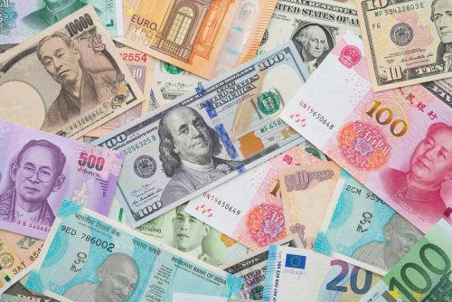

Yo elegí el tema de las monedas antiguas por que me gusta mucho coleccionarlas, tengo una gran
colección de estas y me gustan por que siento que las monedeas te transportan a otra época, son
objetos de suma importancia y que pasan por las manos de muchas personas por lo que con el
tiempo representan la era en la que fueron usadas, ya sea por su valor o por su diseño.
Me gusta coleccionar de los mas paises y épocas posibles para hacer mas rara mi colección.
Algunos delos dispositivos más comunes.
Las
monedas más importantes
05/10/22
Las dies monedas más usadas en el mundo
Dolar americano
Euro
Libra esterlina
Franco suizo
Yen Japones
Dolar Hong konés
Dolar canadiense
Yuan chino
dolar australiano
Real brasileño
Las Monedas más importantes del mundo, estas son las mas usadas por su alto valor y por la gran
economia que representan

Los billetes y monedas representana las divisas.
Aqui te dejo algunos sitios donde puedes revisar informacion sobre Monedas y cuanto valen
Video
7/10/22
Video sobre monedas antiguas
Investigación
11/11/22
Las monedas más importantes del mundo
El dolar
El dólar es la moneda oficial de los Estados Unidos -lugar en el que se emite- pero
también de otros países como Ecuador, El Salvador o Zimbabue. Además, el dólar
estadounidense es la divisa más utilizada por los turistas.
Por lo que al sistema bancario nacional se refiere, la Ley de la Reserva Federal de 1913
creó un banco central y lo organizó para poder seguir el ritmo de los cambios en las
necesidades financieras del país. Hoy en dia que estados unidos es la potencia más
grande del mundo el dolar es la moneda más importante
El dólar es la moneda de reserva internacional más importante del mundo y
también la más utilizada en las transacciones internacionales
El Euro
Los billetes y monedas en euros son tangibles y nos recuerdan a diario la libertad, la
comodidad y las oportunidades que ofrece la UE.
El 1 de enero de 1999, once países de la UE adoptaron su nueva moneda común. El euro
comenzó siendo una moneda electrónica y los billetes y monedas en euros entraron en
circulación tres años después.
El euro es hoy la moneda de diecinueve países de la UE y de más de 340 millones de
europeos. Es una de las monedas más importantes del mundo y en el Banco Central Europeo
nos encargamos de su proteger su valor.
El euro facilita nuestras vidas haciendo que trabajar, comerciar, viajar,
estudiar y vivir en el extranjero sea más sencillo. Banco Central
Europeo
19 de los 27 paises que hay en europa utilizan el euro
Libra esterlina
El origen de la libra esterlina proviene del peso de una libra de plata esterlina y fue
introducida hace varios siglos, en concreto en 1158.
Países donde la libra esterlina es moneda oficial: Reino Unido, dependencias de la
Corona y territorios británicos de ultramar.
Es la moneda más antigua en uso al sobrevivir como una divisa independiente. Al reino
unido siempre haber sido una gran potencia militar y economica esta moneda siempre ha
sido muy relevante y ha estado en los tops de monedas más importantes del mundo
Los paises siempre agregan diseños a los billetes que tiene que ver con la historia
y la cultura
Título del artículo
dd/mes/aa
Ejemplo de subtítulo
Ejemplo de contenido
Texto de descripción de mi ilustración.
¿Donde encontrar monedas antiguas?
29/01/23
Lugares dodne suele haber monedas antiguas
Tiendas de antiguedades, en estas tiendas tambien llamadas anticuarios puedes encontrar de todo
tipo de objetos, eso incluye claramente a las monedas, aqui tienes que buscar muy bien, puede
ser que tambien haya monedas dentor de otros objetos como bolsas, o maquinas pero tmabien no
dudes en preguntar, usualmente a slas monedas por su gran valor y su pequeño tamaño las tienenm
guardadas en un lugar cerca de la caja, pregunta y de seguro tendran algo para ti.
Numismaticas, la numismática es el coleccionismo de monedas y otros objetos relacionados, tales
como billetes, títulos valor y medallas. Por lo que yendo a una de estas tiendas podras
encontrar muchos tipos de monedas y billetes pero algo bueno de estas tiendas es que no solo
habrán monedas antiguas, sino que tambien habrán monedas especiales o ediciones limitadas y
tambien monedas que solo estan en circulación en otros paises por lo que aunque no solo hayan
monedas antiguas las tiendas numismaticas pueden enriquecer mucho tu colección.
Tiendas en linea. Hoy en dia todo se puede conseguir por internet, y las monedas no son la
escepción, puedes encontrar muchas monedas y articulos especiales en sitios web como ebay,
amazon o mercado libre, aqui podras encontrarte con una gran selección de vendedores, pero
cuidado, siempre verifica que si sean vendedores y articulos reales los que se te estan
ofreciendo.
La monedas pueden ser especiales por su antiguedad, sus componenteso su proposito .
hace muchos años las monedas solian estar hechas de materiales preciosos como oro o plata.
 Título del artículo
Título del artículo